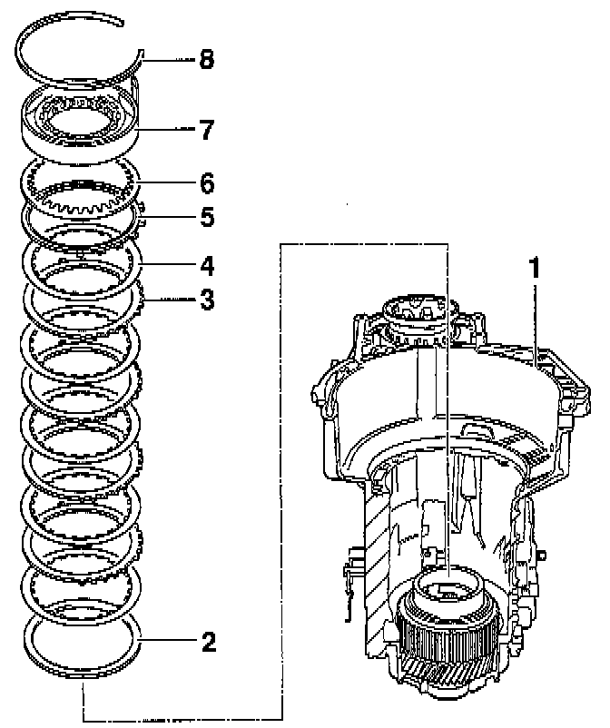
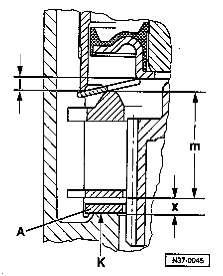
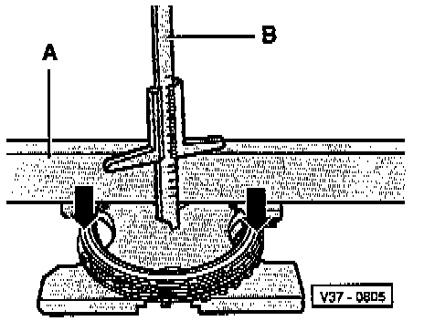
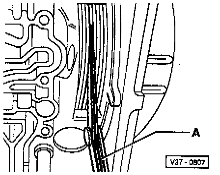

Reverse Gear Brake (B1)

COMPONENT NOTES AND INFORMATION
1 Transmission housing
- With input gear and planet carrier installed
2 Shim
3 Outer plate -B1-
- Quantity used. Application and ID
4 Inner plate -B1-
- Quantity used. Application and ID
5 Pressure plate
- Install with flat side facing plates
- Different thicknesses depending upon the number of inner plates installed
Gearbox with 4 inner plates: 13.5 mm
Gearbox with 5 inner plates: 10.5 mm
6 Dished washer
- Convex side faces towards free wheel
7 Free wheel with -B1- piston
NOTE:
^ Before removing or installing free wheel remove valve body and take out sealing plugs, refer to Valve Body and Sealing Plugs. Service and Repair
^ Also remove Transmission Vehicle Speed Sensor
8 Circlip
PROCEDURES
Determining Shim -A- Thickness

- Shim thickness -A- is determined by gap "x" and selected from shim table below.
"x" = "k"+"I"/"2"-"m"
dimension x equals dimension k plus dimension I divided by 2 minus dimension m
A = Shim
x = Gap
I = Position of piston in free wheel
m = Height of plate set including pressure plate
K = Constant = 26.8 mm
- "K" is determined by installation height in gearbox housing and is not adjustable.
Calculating "I":

- Press piston in direction of arrow as far as stop.
- Place straightedge "A" onto outer race of free wheel.
- Measure to inner edge of piston with depth gauge "B".
Example:
Reading minus thickness of straightedge equals "I"
51.8 mm
- 48.2 mm
= 3.6 mm
Calculating "m":

- Place straightedge "A" on thrust plate.
- Compress set of plates including pressure plate in direction of arrow and measure the thickness of plate set with depth gauge " B ".
Example:
Reading minus thickness of straightedge equals "m"
73.5 mm
- 48.2 mm
= 25.3 mm
Determining and Selecting Shim -A- Thickness
- Shim thickness -A- is determined by gap "x" and selected from shim table below.
"x" = "k"+("I"/"2)"-"m"
dimension x equals dimension k plus dimension I divided by 2 minus dimension m
26.8 + (3.6 / 2) - 25.3 = 3.3 mm
Reverse Gear Brake (B1), Shim Table:

- Determine size of shims according to table above:
- Obtain shims from parts supplier
- After determining shim for brake -B1-, perform check measurement below.
Reverse Gear Brake -B1- Check Measurement
- Install parts up to free wheel and secure with circlip Assembling planetary gearbox.

- Measure play between plates with feeler gauge "A".
Play:
minimum = 1.20 mm
max. = 1.80 mm